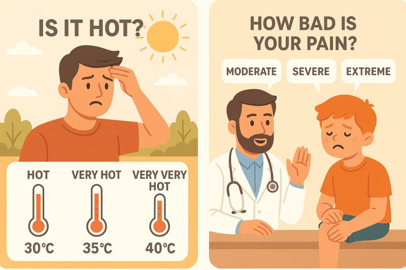

HAFSAA OUIFAK · AI RESEARCHER
Making AI
worth
trusting.
I build bridges between what AI predicts
and what humans can understand.
Ph.D. Candidate at UM6P/Visiting Research Scholar at UTRGV
A little more about meA prediction is only the beginning.
Understanding it is where
the real work starts.
I’m Hafsaa, an AI researcher working at the intersection of machine learning, human understanding, and the physical world. My Ph.D. at Mohammed VI Polytechnic University explores how neuro-fuzzy systems can balance performance, interpretability, and physical consistency.
At UTRGV’s Institute for Advanced Manufacturing, I bring those questions into the real world through battery intelligence, digital twins, and autonomous water drones. Along the way, I teach, mentor, and make space for more people in technology.
02 / SELECTED RESEARCH
From questions
to possibilities.
Transparent models. Physical grounding.
Work that reaches beyond the screen.
03 / THE PLAYGROUND
A LITTLE INTERACTIVE EXPERIMENTIs it hot?
It’s a little fuzzy.
Human language rarely fits into a yes-or-no box. Fuzzy logic lets a temperature be partly “warm” and partly “hot” at the same time.
Move the slider. Watch the memberships change. That’s a small glimpse into the interpretable systems I study.
The post that inspired thisIllustrative membership functions, not probabilities. Categories can overlap and do not need to add up to 100%.
04 / THE PAPER TRAIL
Ideas, in print.
05 / CONNECTING THE DOTS
Curiosity has
taken me places.
From mathematics in Marrakech to trustworthy AI in Morocco and applied research in Texas.
06 / BEYOND THE LAB
The human side
of the work.

inA little fuzziness.
A lot more understanding.
Why everyday language is a useful starting point for talking about explainable AI.
Read my post in
inA milestone.
And so much gratitude.
Celebrating the ENSIAS excellence award as the top graduate of the 2020 Data Science and Big Data master’s class.
Read my postMAKING ROOM FOR OTHERS
Knowledge grows
when we share it.
As a Women Techmakers Ambassador, I organize events, speak about AI, and mentor students. Helping more people find their place in technology is part of the work, too.
Let’s start a conversationGOOD RESEARCH STARTS WITH A CONVERSATION
EDINBURG, TEXAS ↗ THE WORLD